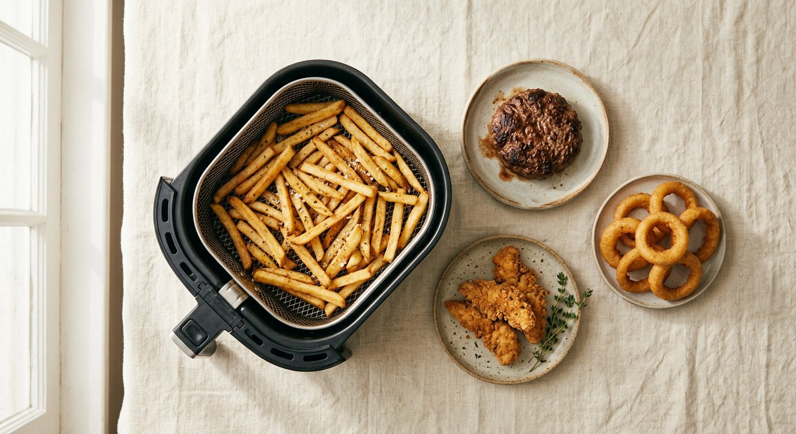
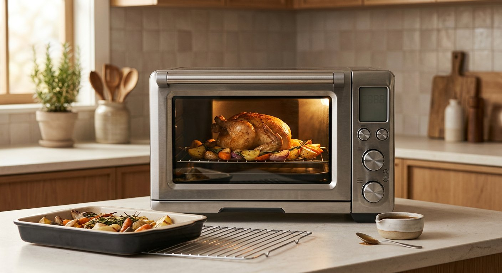

Guide · Form factor
Basket or oven-style air fryer: what should you compare?
Capacity numbers lie by omission. Workflow doesn't: what fits, what flips, what gets crispy on which shelf.
rel="sponsored".
How we disclose
Home / Guides
Every guide starts as a question a buyer would actually type. No rankings we can't defend, no "best of" lists without a source — the comparison frameworks, then the receipts.
Working titles: the four guides below are published editorial hypotheses chosen for usefulness, not claims about popularity, search volume or product superiority. Topic performance will be measured (see measurement) before more are commissioned.
4 entries
Capacity numbers lie by omission. Workflow doesn't: what fits, what flips, what gets crispy on which shelf.

Quart counts assume food is stacked like a warehouse. Real cooking needs surface area — here's how to check it.

The best predictor of whether an air fryer gets used is whether it gets cleaned. Size both problems before buying.

Six functions on the box, three in your week. A question list for toasters-oven- hybrids, combo fryers and gift purchases.
Guides are grouped into clusters so the archive grows with the calendar instead of at random. Each cluster ships with its guide added to the sitemap and the feed on the same day.
| Cluster | Window | Guides | Status | Source / basis |
|---|---|---|---|---|
| Form factor fundamentals | Evergreen | Basket vs oven-style, Capacity checklist | published | editorial hypothesis (working title) |
| Small-kitchen living | May–Aug | Cleanup & counter space | published | editorial hypothesis (working title) |
| Gifting season | Nov–Dec | Multi-function questions | published | editorial hypothesis (working title) |
| Measured follow-ups | After 30 days of data | — none yet — | gated on data | measurement page |